To investigate the influence of some important configuration parameters of the Genetic Programming kernel, a problem which can be quickly calculated was selected: the lawn-mower problem (See Koza's book).
The lawn-mower problem can be described as follows. Consider an autonomous mower which must evolve the ability to mow the lawn it is placed upon. The lawn in question is a ten times ten grid toriodal world. Toriodal means that if the mower moves outside the lawn, it automatically comes in again on the opposite side. The mower has no sensors. It can move forward, turn left, and jump.
Starting from a reasonably good configuration, some parameters were modified. The starting configuration was:
PopulationSize = 100 NumberOfGenerations = (depends on parameter) CreationType = 2 CreationProbability = 2.0 CrossoverProbability = 98.0 MaximumDepthForCreation = 6 MaximumDepthForCrossover = 17 SelectionType = 1 TournamentSize = 10 DemeticGrouping = 0 DemeSize = 20 DemeticMigProbability = 100.0 SwapMutationProbability = 3.0 ShrinkMutationProbability = 3.0 SteadyState = 0 LengthFactor = 0.001
As many as 50 runs were made for each parameter value. The average fitness values of the best performing genetic programs were recorded for each generation.
This study was done to determine the influence of the Genetic Programming control parameters. The conclusions that can be drawn from the study are, however, not generally applicable to all problems.
Parameter study: large population size versus large
number of generations
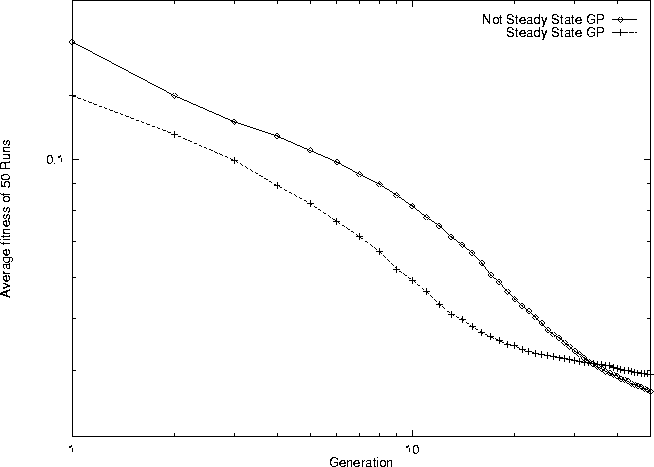
Parameter study: steady state
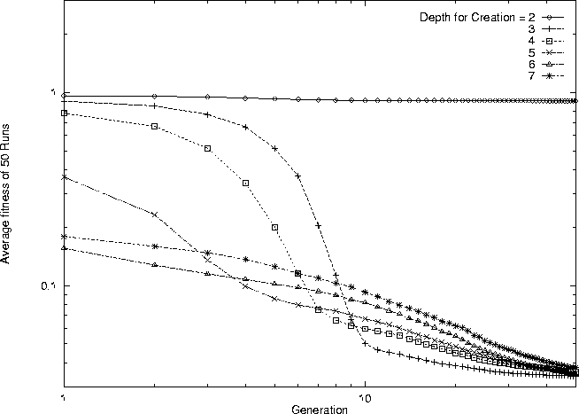
Parameter study: maximum depth for creation
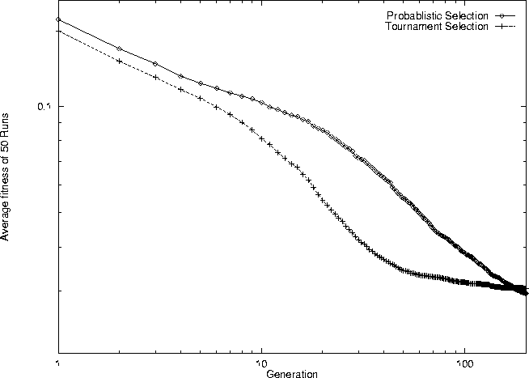
Parameter study: selection method
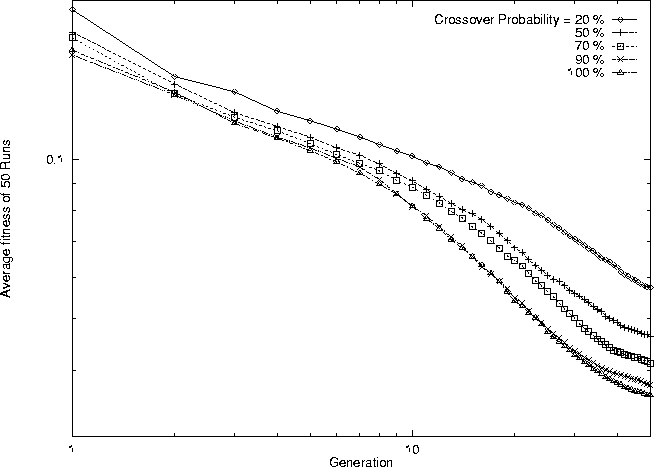
Parameter study: crossover probability
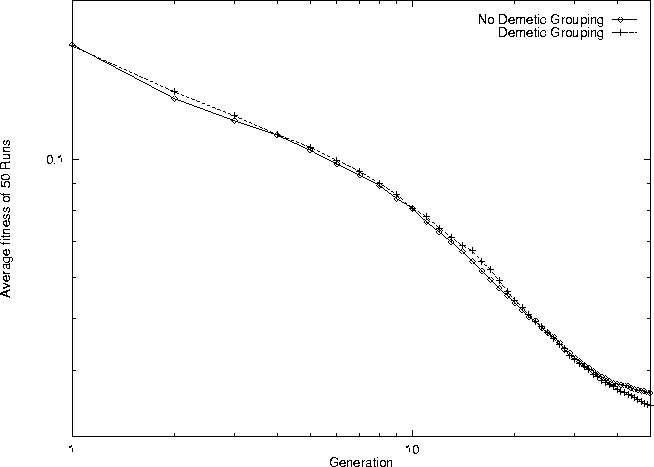
Parameter study: demetic grouping
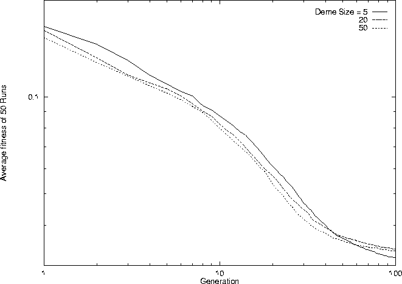
Parameter study: deme size. Demetic grouping=1
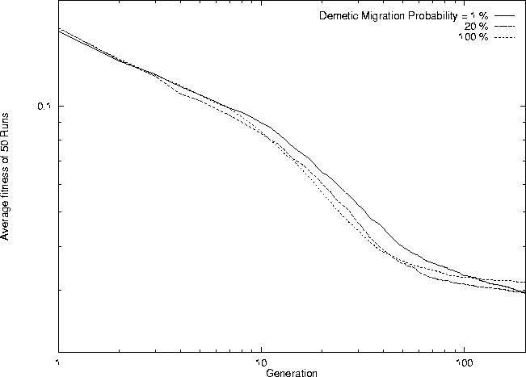
Parameter study: demetic migration probability.
Demetic grouping=1
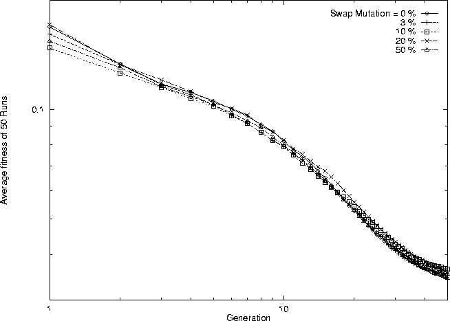
Parameter study: swap mutation
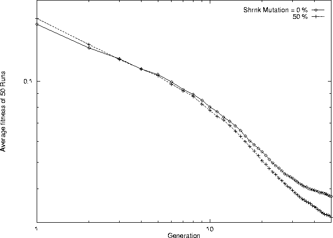
Parameter study: shrink mutation
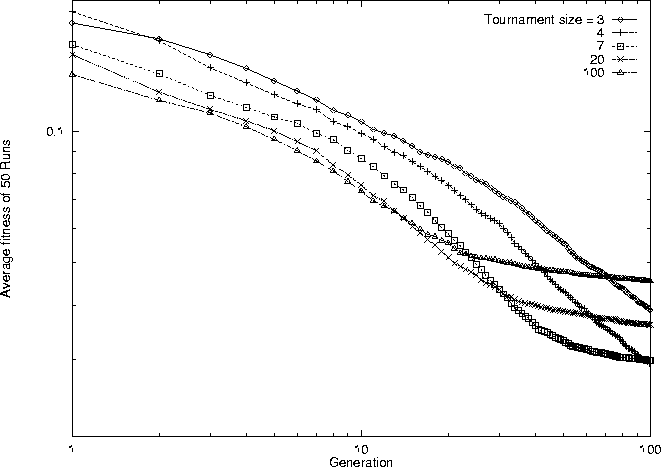
Parameter study: tournament size
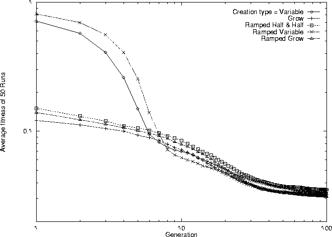
Parameter study: creation type
There are some conclusions that can be drawn from the parameter study:
Go to the first, previous, next, last section, table of contents.